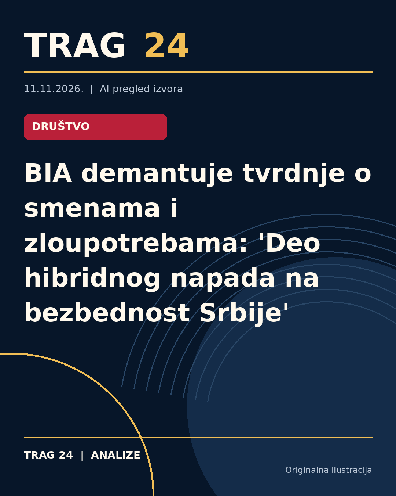

BIA demantuje tvrdnje o smenama i zloupotrebama: 'Deo hibridnog napada na bezbednost Srbije'

ŠTA SE DOGODILO
Bezbednosno-informativna agencija (BIA) izdала je saopštenje u kojem demantuje tvrdnje nedeljnika Radar o smenama rukovodilaca unutar Agencije i navodnom uništavanju ili falsifikovanju dokumentacije. BIA ocenjuje da su objave Radara neistinite i imaju za cilj destabilizaciju sistema bezbednosti Srbije.
HRONOLOGIJA
Prema medijskom izveštavanju Radara, zamenik direktora BIA Tomislav Radovanović smenjen je sa te pozicije, a načelnik Prve uprave Miloš Simić otpustjen je uz otkaz ugovora o radu, dok je prethodnih dana smenjena i šefica kabineta direktora BIA Olivera Munjić. BIA je na ove tvrdnje odgovorila saopštenjem istog dana, negirajući sve navode o smenama i nezakonitim postupcima.
ŠTA NAVODE IZVORI
Nedeljnik Radar u svojim objavama tvrdi da su pomenute smene vezane za otkrića te redakcije u vezi sa prisluškivanjem te iste redakcije. Iz BIA navode da je u pitanju nastavak plasiranja dezinformacija zasnovanih delom na senzacionalističkim objavama na društvenim mrežama, koje po oceni Agencije služe destabilizaciji bezbednosnog sistema. BIA takođe navodi da ne objavljuje informacije o internim kadrovskim rešenjima i da su svi navodi Radara neosnovani.
ŠTA JE POTVRĐENO
Potvrđeno je da su postojali navodi u medijima o smenama i internim problemima u BIA koje je preneo Radar. Takođe je potvrđeno da je BIA zvanično demantovala sve te tvrdnje, ocenjujući da one predstavljaju pokušaj destabilizacije i hibridni napad na sistem bezbednosti Republike Srbije.
ŠTA NIJE POTVRĐENO
Nije potvrđeno da je bilo ko od navedenih lica iz BIA smenjen ili da su sprovođene nezakonite aktivnosti koje se tiču uništavanja ili falsifikovanja dokumentacije, kao ni da su takvi događaji povezani sa medijskim izveštajima o prisluškivanju redakcije Radara.
ŠTA OSTАJE OTVORENO: Ostaje nejasno da li su u Agenciji bilo kakve promene ili reorganizacije koje nisu javno potvrđene, s obzirom na to da BIA, kako navode, ne objavljuje podatke o internim kadrovskim odlukama. Takođe, nisu ponuđeni nezavisni izvori koji bi potvrdili ili demantovali medijske tvrdnje o prisluškivanju redakcije Radara i njegovoj povezanosti sa navodnim smenama.
Izvori
- https://www.telegraf.rs/vesti/hronika/4431398-oglasila-se-bia-deo-smisljenog-hibridnog-plana
- https://n1info.rs/vesti/bia-demantuje-radar-o-smenama-u-agenciji/
Ova analiza je pripremljena uz pomoć veštačke inteligencije na osnovu javno dostupnih izvora. Navodi izvora nisu nužno nezavisno potvrđeni.